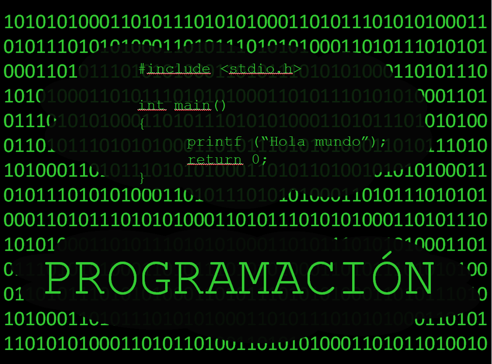

PROGRAMACION
La programación informática o programación algorítmica acortada
como programación, es el proceso de diseñar, codificar, depurar
y mantener el código fuente de programas computacionales.
El código fuente es escrito en un lenguaje de programación.
El propósito de la programación es crear programas que
exhiban un comportamiento deseado. El proceso de escribir
código requiere frecuentemente conocimientos en varias áreas
distintas, además del dominio del lenguaje a utilizar, algoritmos
especializados y lógica formal.

programacion orientada a objetos
programacion web